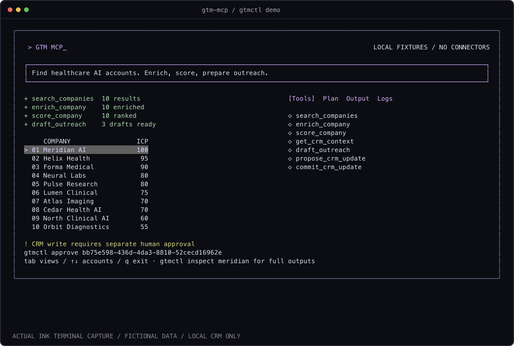

> PROJECT / GTM MCP
GTM MCP_
Account research tools for agents.
Control stays with you.
- MCP-native
- Seven real tools over stdio. Structured inputs and outputs.
- Explainable by default
- Every ICP score includes the criteria behind it.
- Human-approved writes
- Inspect the payload. Approve locally. Then commit.
- Open & portable
- TypeScript, Ink, React, Zod. MIT licensed. Runs locally.

The write boundary.
AI client
│ stdio
▼
GTM MCP ──► Research + scoring
│
▼
Proposal ──► Human review
│ approve
▼
Local CRMAn MCP agent cannot approve its own proposal. Approval is bound to a payload digest, record version, and 15-minute expiry.
Run it.
Node.js 22+. Unzip the source, then:
cd gtm-mcp
npm ci
npm run build
node dist/cli.js demoTab through Tools, Plan, Output and Logs. Arrow keys select accounts. Q exits. This page is a showcase; the executable product runs in your terminal.
What works today.
Fixture search and enrichment, documented ICP scoring, template outreach, persistent local CRM context, immutable proposals and human-gated commits. The same engine powers the CLI and MCP server.
External CRM, web search, and LLM integrations are not connected. All accounts and signals are fictional. No messages are sent. The approval boundary assumes the agent cannot access your shell or state files.